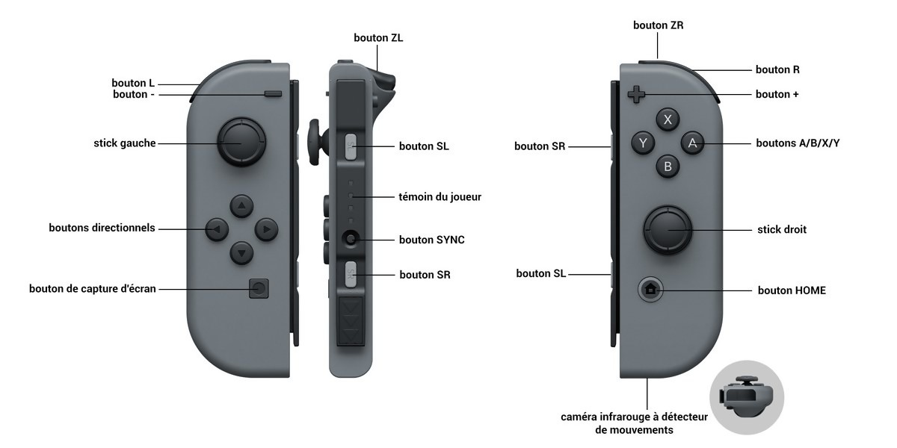
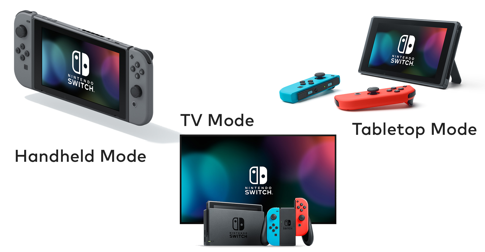

La Wii U c'est bien moins vendue que ce qu'espérait Nintendo les gens n'ont pas comrpis si c'était une console de salon ou aussi une console portable avec le gamepad qui était en fait une extension de la console qui était bien une console de salon. Les jeux ont commencés à manquer eux aussi, seuls les Mario, Mario Kart 8 et Splatoon ont réussi à tenir la baraque. Alors Big N reviens avec une console à la fois de salon quand on branche la tablette sur le dock et on peut continuer à jouer en dehors de chez soi en emportant la tablette avec soi et en y branchant les joy-con.
Les joy-con avec une technologie de gyroscope et de vibration avancée donnent l'impression d'avoir un verre qui contient un glaçon dans les mains. En mode TV ils sont reliés entre eux pour former une manette mais quand le joueur souhaite jouer en mode tablette il les branche sur chaque côté de la console.
On voit ci dessous les différents modes de jeu possibles, sur la TV avec la manette formée par les joy-con, en mode embarqué avec les joy-con de chaque côté ou en mode "posé" ou la console est inclinée et les joycon débrachés pour jouer un peu plus loin.
La Switch s'est déjà bien mieux vendue que la Wii U sur la même période, en plus des jeux sont à venir Splatoon 2 pour cet été et Mario Odyssey pour Noël. Noël sera une période charnière, des packs jeux + consoles seront surement disponibles avec un prix surement inférireur à celui actuel.
| Nom | Prix |
|---|---|
| Console | 395,99€ |
| Volant | 16,81€ |
| Zela | 56€ |
| MK8 Deluxe | 44,99€ |